Financial Markets: Part I
BUSS254 Investments
Lecture Outline
- Money markets: Call, Repo, CD, CP, etc.
- Capital markets: Bond, Equity
- Derivatives markets: Futures, options etc.
- Trading mechanisms
- Investment Companies
- Reading: BKM Ch. 1 and 2, “Financial Markets in Korea” Bank of Korea (2022)
Money Markets
Financial Instruments
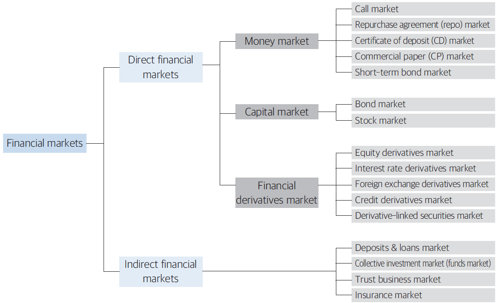
Financial Market Size in Korea
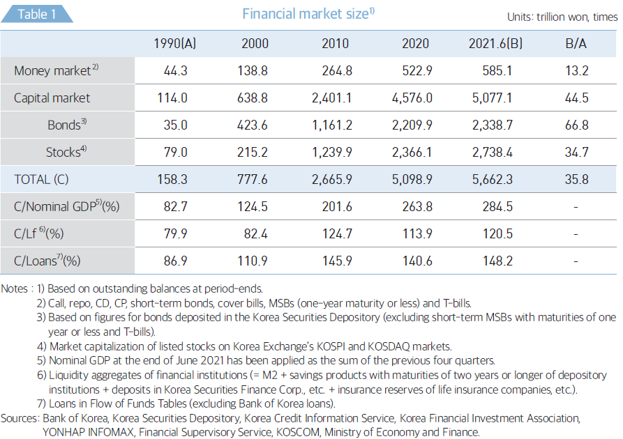
Financial Market Size: Global
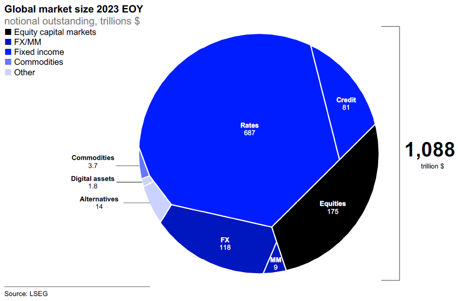
What Are Money Markets?
Provide short-term liquidity to financial institutions, corporations, and investors.
Instruments have maturities ranging from one day to one year.
A vital part of the financial system, ensuring short-term funding.
Heavily regulated by governments and central banks due to its importance.
Regulations of money markets vary widely over time and across jurisdictions.
- Individuals typically access the instruments via a mutual fund (money market mutual fund).
Typical characteristics
- Short maturity (overnight ~ 1 year), high liquidity, Low risk, Low return, Large denomination: typically large institutions, Dealer market
Money Markets: Size
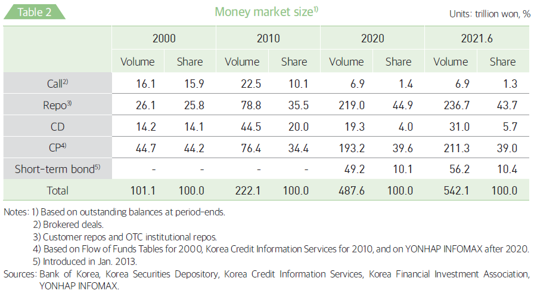
Developed in the 1960s–1970s, expanded in the 1990s due to interest rate liberalization and financial sector reforms (the Asian crisis).
Since the late 2000s, restructuring efforts aimed at improving efficiency
Korea’s money markets have shifted towards repos, CPs, and short-term bonds, reflecting regulatory changes and financial innovation (discuss later).
Money Markets: Global
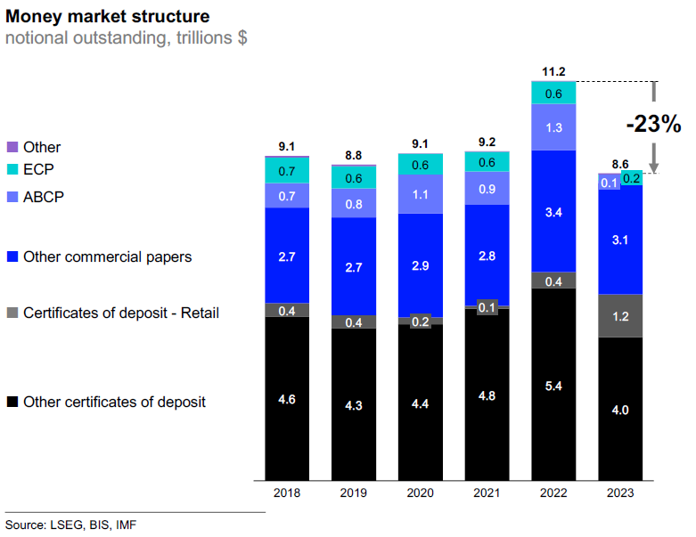
Call Market
A marketplace where financial institutions borrow (lend) money on a very short-term basis to resolve their temporary surpluses or shortages of funds (interbank loans).1
- Mostly, uncollateralized, brokered, and overnight.
For banks that must hold reserve requirements, the call market helps them to smooth shortages or excesses in their reserve balances.
The call market is also important in the implementation of monetary policy.
- Before 2008, BOK directly set call rate as the Base Rate
- Now, call rates are closely linked to BOK repo rate (via open market operations).
Known as the Federal funds market in the U.S., the Call market in Japan, and the Unsecured market in Europe.
Call Market: Open Market Operations
- The BOK targets the call rate (Base Rate) in its monetary policy, announcing it after regular policy meetings.
- By buying government securities, the BOK increases bank reserves and the money supply, lowering the call rate. Selling securities has the opposite effect. These actions are known as open market operations.
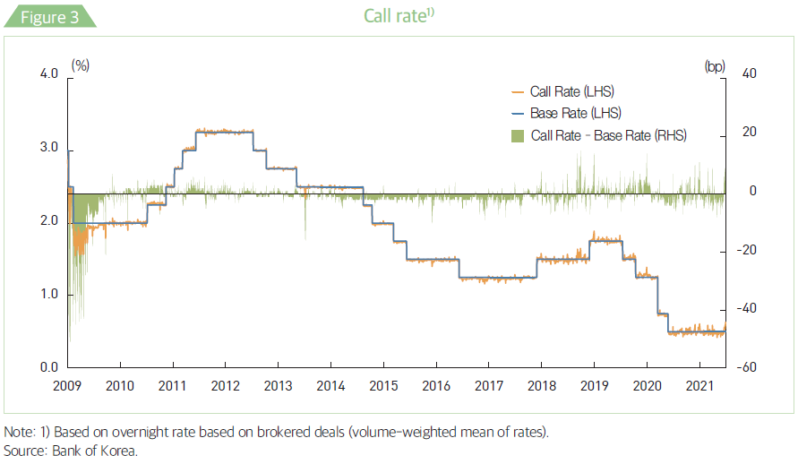
Call Market: Regulations
The Korean government restricted securities firms’ borrowing in 2010 and excluded non-banks from the call market in 2015 to enhance financial stability and reduce systemic risk.
Reducing Short-Term Funding Risks – Heavy reliance on call markets made financial institutions vulnerable to liquidity shocks.
Preventing Excessive Leverage & Arbitrage – Some non-banks used call market funds for high-risk investments, increasing systemic risk.
Strengthening Monetary Policy Transmission – Non-bank participation distorted Bank of Korea’s interest rate policies.
Promoting the Repo Market – The government encouraged secured repo transactions, reducing counterparty risk and making repos the dominant funding source.
Call Market: Evolution
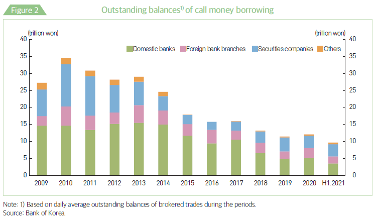
Impact:
- Call market share dropped from 10.1% (2010) to 1.3% (2016).
- Repo market expanded, replacing the call market as the primary short-term funding mechanism.
- These measures aligned with global post-2008 financial reforms, ensuring a more resilient financial system
Repurchase Agreement (RP)
A repurchase agreement (repo) is a short-term secured loan where securities serve as collateral.
- Mechanism:
- One party sells securities (ownership transfer) and agrees to repurchase them later at a higher price.
- Securities serve as high-credit-quality collateral.
- From the buyer’s perspective, this is called a reverse repo.
- The repo rate is the implied interest rate based on the price difference.
RP: Types of Repos
By Participants
- Customer repos: Between financial institutions and their clients.
- Institutional repos: Among financial institutions.
- Bank of Korea (BOK) repos: Between the BOK and institutions.
By Maturity
- Overnight repo: Expires the next day.
- Term repo: Fixed maturity beyond overnight.
- Open repo: No fixed maturity; can be rolled over.
By Collateral Management
- Delivery repo: Collateral is transferred to the buyer.
- Tri-party repo: A third party (custodian) holds collateral.
- Hold-in-custody repo: Seller retains collateral (common in customer repos).
RP: Market Size
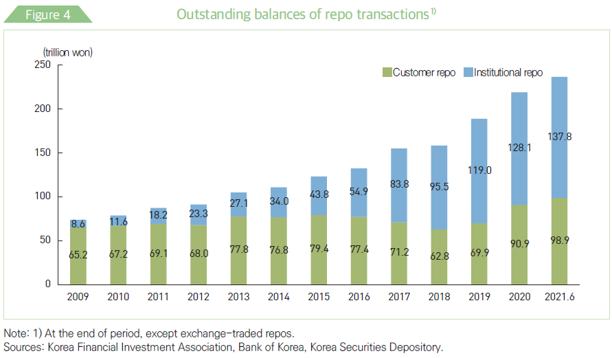
- As of 2020, €8.3 trillion in Euro, $2.7 trillion in U.S.
- Alternative to deposits or MMFs.
- Tighter regulation on the call market drove non-bank financial institutions to the repo market.
Role of the Repo Market
- Enables financial institutions (e.g., banks, broker-dealers, hedge funds*) to borrow cheaply using securities as collateral.
- Provides cash-rich entities (e.g., money market mutual funds, corporations) with a low-risk return.
- Supports market liquidity and efficient collateralized borrowing.
Repos and Monetary Policy
- Central banks use repos and reverse repos to manage liquidity and control short-term rates.
- Injecting liquidity: A repo transaction (central bank buys securities) adds reserves to the system.
- Draining liquidity: A reverse repo (central bank sells securities) absorbs reserves, reducing money supply.
- Repo rates influence credit conditions, inflation, and economic growth.
- Injecting liquidity: A repo transaction (central bank buys securities) adds reserves to the system.
Significance of the Repo Market
- Ensures efficient money markets and short-term funding.
- Facilitates monetary policy transmission and interest rate stability.
- Plays a key role in financial system stability through collateralized lending.
BOK Repo
BOK holds regular auctions of seven-day maturity repo sales every Thursday in order to control short-term liquidity.
- Flexibly controls timing and collateral securities

- Repo: liquidity absorption
- Reverse repo: liquidition provision
Certificate of Deposites (CD)
- A Certificate of Deposit (CD) is a time deposit issued by banks with a fixed maturity and interest rate.
- Negotiable CDs can be transferred or traded in the secondary market, unlike non-negotiable CDs.
Key Features of CDs
- Subject to reserve requirements, similar to regular deposits.
- Not covered by deposit insurance since 2001 (unlike U.S. CDs).
- Issued at a discount (investors receive face value at maturity).
CD Rate Determination in Korea
- The CD rate is published twice daily (12:00 and 16:30) by the Korea Financial Investment Association.
- Based on 91-day CDs issued by AAA-rated nationwide banks.
- Calculated as a simple average of rates from 10 securities companies, excluding the highest and lowest quotes, rounded to the third decimal place.
CD Rate and Its Role
- The CD rate serves as a key reference rate for:
- Floating-rate loans and interest rate swaps.
- Influencing bank loan and deposit rates.
- However, 91-day CDs lack liquidity and may be unrepresentative, leading to potential volatility.
Alternative Short-Term Reference Rates
To address CD rate limitations, several alternative benchmarks have been introduced:
- KORIBOR (Korea Inter-Bank Offered Rate) – Established in July 2004.
- COFIX (Cost of Funds Index) – Introduced in February 2010.
- KOFR (Korea Overnight Financing Reference Rate) – Launched in February 2021, based on repo rates for government bonds and Monetary Stabilization Bonds (MSB).
Certificate of Deposits: Rates
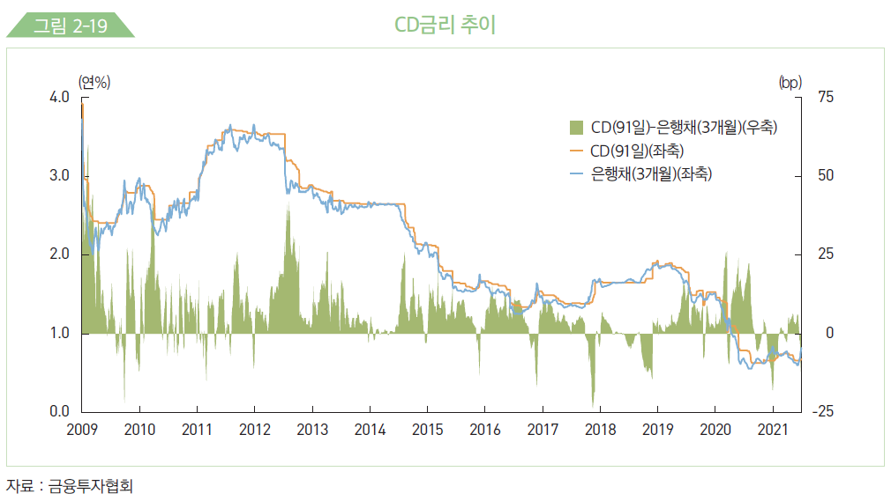
- CD rates are sometimes “sticky.”
Commercial Paper (CP)
- A short-term unsecured debt instrument issued by corporations with strong credit ratings to raise funds (e.g., for working capital).
- Key Features:
- Faster and easier to issue than bonds or stocks.
- Not backed by collateral, except for asset-backed CPs (ABCPs).
- Lower interest rates compared to bank loans.
- Must be rated by at least two rating agencies.
- Issued at a discount (investors receive face value at maturity).
- Faster and easier to issue than bonds or stocks.
CP Rate Determination in Korea
- The CP rate is published twice daily (12:00 and 16:30) by the Korea Financial Investment Association.
- Based on A1-rated CPs (highest grade) from eight financial institutions.
- Computed as a simple average of the six middle values after removing the highest and lowest rates.
Asset-Backed Commercial Paper (ABCP)
- Backed by underlying assets such as:
- Term deposits, loans, corporate bonds, trade receivables, real estate, etc.
- Term deposits, loans, corporate bonds, trade receivables, real estate, etc.
- Typically issued through a Special Purpose Company (SPC) via securitization.
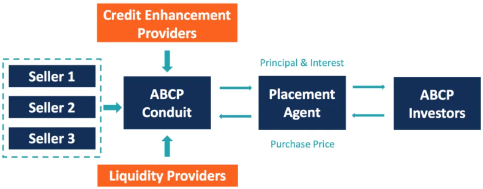
- Credit Enhancement Providers reduce default risk by, e.g., providing guarantees.
- Liquidity Providers cover maturing ABCPs, e.g., if investors don’t roll over.
- Placement agents are intermediaries promoting ABCPs, helping determine competitive pricing.
Commercial Paper: Evolution
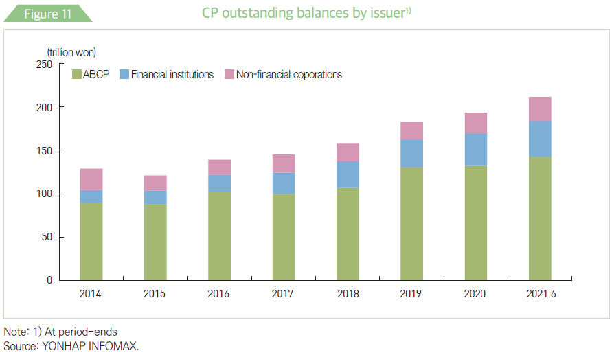
- Rapid CP market expansion since the mid-2000s due to the convenience of ABCP issuance.
- Surge in PF ABCP issuance driven by:
- Booming construction market.
- Regulatory changes shifting real estate PF ABS to PF ABCP.
Commercial Paper: Rates
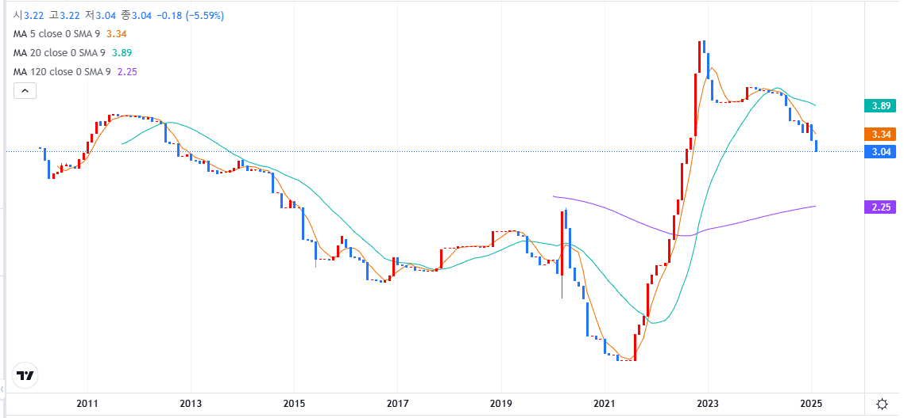
- The CP market in Korea occasionally experiences periods of stress.
Recent Developments: Gangwon-do Default
- Background: Gangwon-do province’s real-estate developer (GJC) issued an ABCP for the Legoland project, guaranteed by the province.
- Default Event: GJC missed a principal payment; the province filed for rehabilitation instead of honoring the guarantee.
- Immediate Impact: Credit rating agencies downgraded the ABCP from A1 to D within five days.
- Government Response: Special Purpose Vehicle (SPV) created to purchase up to ₩1.8 trillion ($1.33 billion) of PF-ABCP. Purchases to continue until May 30, 2023.
Short-Term Bonds
Corporate bonds issued and distributed electronically
- Though legally a bond, it works like CPs.
- Unlike CPs, physical certificates are not issued.
- CPs are electronically issued and traded in U.S. (since 2000)
Introduced in January 2013 in Korea
- To replace CP: improve transparency, require board’s approval
- To diversify short-term funding for non-bank institutions away from CP and Call markets.
Short-Term Bonds: Evolution
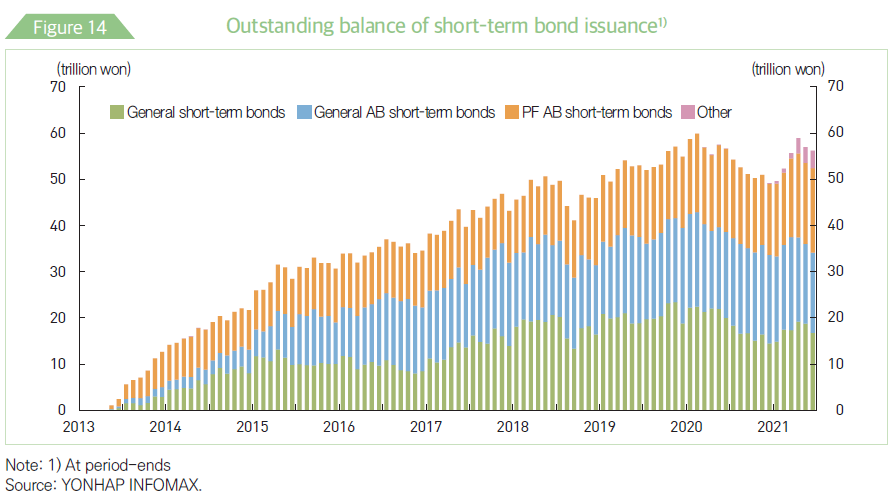
U.S. Treasury Bills
Debt issued by the US Treasury with maturities under one year.
- Maturities: 4, 8, 13, 26, or 52 weeks.
- Issued at a discount, highly liquid, denominations of \(\ge \$100\), exempt from state and local taxes, but subject to federal tax.
- The most marketable money market instrument.
The Federal Reserve is a major purchaser of these securities.
- Federal Reserve’s monetary policy, through the federal funds rate, significantly impacts T-Bill prices.
- Higher federal funds rates tend to reduce demand for Treasuries, and vice versa.
U.S. Treasury: Foreign Holders
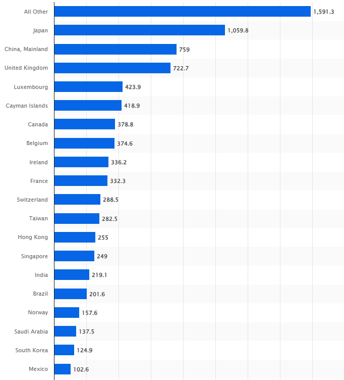
- As of December 2024, Souce: U.S. Treasury
U.S. Treasury Bills: Roles
- Largest & Most Essential Bond Market: Due to U.S. creditworthiness and economic dominance, Treasuries (billes, notes, and bonds) form the deepest and most liquid bond market globally.
- Low-Cost Borrowing: The U.S. government benefits from relatively low financing costs over time.
- Safe-Haven Asset: Treasuries are seen as risk-free, near-cash assets, easily liquidated during market stress.
- Benchmark for Fixed-Income Markets: Treasury yields influence borrowing costs for consumers, businesses, and governments worldwide.
- Foundation of Global Finance: Treasury markets are critical to financial stability, serving as the bedrock of the global financial system.
Eurodollars
US Dollar-denominated deposits held at foreign banks or at foreign branches of American banks (outside the U.S.).
- These deposits are not regulated by the Federal Reserve, often resulting in higher interest rates compared to domestic rates.
- Most Eurodollar deposits are for large sums and typically have maturities of less than six months.
The interest rate on overnight Eurodollars tends to closely track the federal funds rate.
- For a U.S. bank with a reserve deficiency, borrowing Eurodollars is an alternative to purchasing federal funds.
- Conversely, for a U.S. bank with excess funds, placing dollars in the Euromarket (Europlacement) is an alternative to selling federal funds.
Similar instruments exist for other currencies, such as Euroyen, Eurosterling, and Eurofranc.
Eurodollars: Roles
- Global Liquidity and Funding Source
- Provides U.S. dollar-denominated funding to banks, corporations, and governments outside the U.S.
- Facilitates global trade and investment, as the U.S. dollar is the world’s primary reserve currency.
- Supports the Offshore Dollar System
- Enables non-U.S. banks and financial institutions to operate in dollars, strengthening dollar-based global finance.
- Reduces reliance on U.S. domestic banks for dollar liquidity.
- Critical for Corporate and Sovereign Borrowing
- Many multinational corporations and governments issue Eurodollar bonds to raise capital efficiently.
- Provides an alternative to domestic debt markets with favorable interest rates.
Money Market Mutual Funds (MMMF)
- Investment funds that invest in short-term, highly liquid, low-risk securities.
- Designed to offer stability, liquidity, and competitive yields compared to savings accounts.
Key Features
- Stable Net Asset Value (NAV): Many funds maintain a $1 per share NAV.
- Liquidity: Investors can redeem funds quickly, making them a cash-like investment.
- Regulation: Tightly regulated, which limits risk exposure.
- Yields & Returns: Typically offer higher returns than savings accounts but lower than riskier investments.
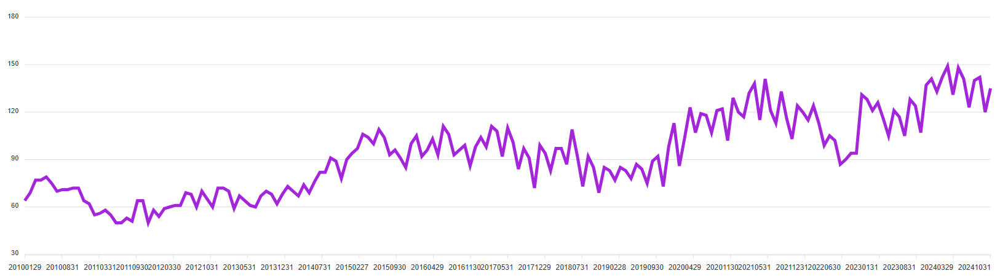
Source: KFIA
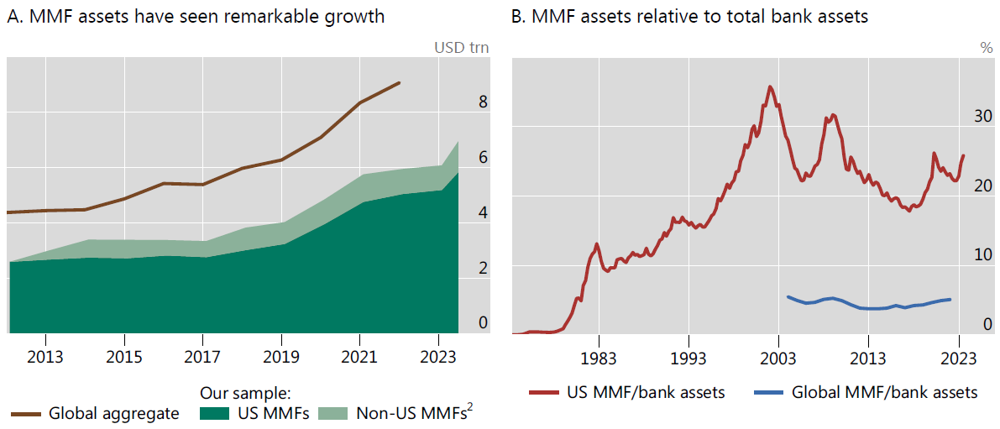
Source: BIS
MMMF: Risks
Potential Risks
- Interest Rate Risk: MMMFs may experience declining yields when interest rates drop.
- Liquidity Risk: Heavy redemptions can strain fund liquidity.
- Credit Risk: Default risk exists, especially for prime MMMFs investing in CP.
- Regulatory Changes: Stricter rules may impact fund structure and returns.
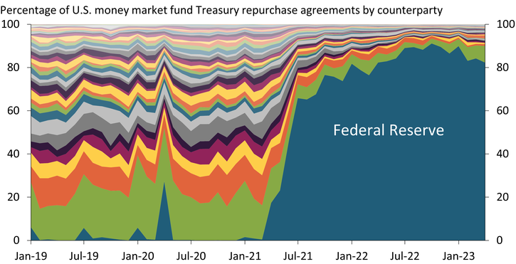
Source: FRB
Pricing Money Market Securities
Alternative Ways of Quoting Prices
(Bond Equivalent) Yield (y) vs. Discount (d)
Depending on the jurisdiction/instruments, prices are quoted as y or d.
- CDs and CPs issued at a discount, but quoted in yield in Korea
- T-bills and CPs (but not CDs) are issued at a discount and quoted as discount in the U.S.
Example: Pay $90 for a $100 zero that matures in 90 days.
\[ y = \left( \frac{100-90}{90} \right) \left( \frac{365}{90}\right) = 0.4506 \]
\[ d = \left( \frac{100-90}{100} \right) \left( \frac{365}{90}\right) = 0.4055 \]
Alternative Ways of Quoting Prices (cont’d)
Consider a zero coupon bond with price \(P\) and face value \(M\)
\[\begin{align*} &P = \frac{1}{\left( 1+ y \times \frac{days}{365}\right)} M \quad \text{and} \quad P = \left( 1 - d \times \frac{days}{365} \right) M \\ &\Rightarrow \frac{1}{\left( 1+ y \times \frac{days}{365}\right)} = \left( 1 - d \times \frac{days}{365} \right) \\ &\Rightarrow d = \frac{y}{\left( 1+ y \times \frac{days}{365}\right)} \quad \text{and} \quad y = \frac{d}{\left( 1 - d \times \frac{days}{365} \right)} \\ &\Rightarrow y > d \end{align*}\]
Example
What is the 180-day discount ``factor’’ of 7% per year?
\[ \frac{1}{\left( 1+ 0.07 \times \frac{180}{365} \right) } = 0.9666 \]
What is the price of a $500 180-day zero coupon bond if the yield is 7%?
\[ 0.9666 \times \$500 = \$483.31 \]
What is the discount on the face value of the bond?
\[ \left(1 - d \times \frac{180}{365} \right) = 0.9666 \]
\[ d = 6.7728\% \text{, which is the same as } \left( \frac{500-483.31}{500} \right) \left( \frac{365}{180} \right) \]
Day Count Conventions
Pricing in financial markets started long before computers…
- People in different countries took different strategies to ease the calculation of accrued interests over time
- 30 days per month? 360 or 365 days per year?
Conventions vary from country to country and from instrument to instrument
- Actual/Acutal: US treasury bonds, Australia
- 30/360 method: US corporate/municipal bonds, Eurobonds
- Actual/360: US money market
- Actual/365: Korea, UK, Japan
- \(X/Y\), where \(X\) is the number of days in a month, and \(Y\) is the number of days in a year.
Source: https://www.rbcits.com/en/gmi/global-custody/market-profiles.page}
Example
Consider a Treasury bond and a corporate bond both have the same annual coupon payment dates (Principal: $100, coupon rate: 8%).
- Their last coupon payment date is March 1, 2018, and the next coupon date is September 1, 2018.
How much interest is accured for the period from March 1, 2018 to July 3, 2018, for the two bonds, respectively?
- Act/Act: \(\frac{124}{184} \times \$4 =2.6957\)
- 30/360: \(\frac{122}{180} \times \$4 =2.7111\)
How about from October 3, 2018 to January 1, 2019?
- Act/Act: \(\frac{90}{184} \times \$4 =1.9889\)
- 30/360: \(\frac{88}{180} \times \$4 =1.9555\)
Excel functions:
DaysandDays360
Example (cont’d)
What if we use Actual/365?
- Divide 8% by 365 = 0.02191
- Multiply by # of days from March 1 to July 3, 2018 (124) = 2.7178
Actual/360?
- Divide 8% by 360 = 0.02222
- Multiply by # of days from March 1 to July 3, 2018 (124) = 2.7555
[NB] Therefore, 8% in Actual/360 is equivalent to \(8\% \times \frac{365}{360} = 8.1111\%\)
- Divide 8.1111% by 365 = 0.02222
- Multiply by # of days from March 1 to July 3, 2018 (124) = 2.7555
[NB] 1% in Actual/360 would earn \(1\% \times 365/360\) of interest in 365 days.
Pricing CDs
- A 90-day CD with $100,000 face value was issued on March 17, 2015 in the U.S., offering a 6% yield (under ACT/360 day convention) with a market rate of 7 %.
- [NB] Unlike US, CDs are issued at a discount in Korea.
- Compute the payoff.
- Compute the price of the CD on March 17, 2015
- On April 10, 2015, the market rate dropped to 5.5 percent. Compute the price of the CD in the secondary market
- On May 10, the market rate further dropped to 5 percent. Compute the return of an investor that purchased the CD on April 10 and sold it on May 10 (30 days)
Pricing CDs (cont’d)
Compute the payoff.
- Payoff \(= 100,000 \times \left(1+ 6\% \times \frac{90}{360} \right) = 101,500\)
Compute the price of the CD on March 17, 2015
- \(PV = \frac{101,500}{\left( 1+ 7\% \times \frac{90}{360} \right)} = 99,754\)
On April 10, 2015, the market rate dropped to 5.5 percent. Compute the price of the CD in the secondary market
Days(Date(2015,4,10),Date(2015,3,17))=24- \(PV = \frac{101,500}{\left( 1+ 5.5\% \times \frac{90-24}{360} \right)} = 100,487\)
Pricing CDs (cont’d)
On May 10, the market rate further dropped to 5 percent. Compute the return of an investor that purchased the CD on April 10 and sold it on May 10 (30 days)
Days(Date(2015,5,10),Date(2015,3,17))=54- \(PV = \frac{101,500}{\left( 1+ 5.0\% \times \frac{90-54}{360} \right)} = 100,995\)
Days(Date(2015,5,10),Date(2015,4,10))=30- \(Return = \left( \frac{100,995}{100,487} -1 \right) \times \frac{360}{30} = 6.07 \%\)
Commerical Paper Yields
Yields on commercial paper are quoted on a discount basis (like Treasurey bills) in the U.S.
A 60-day CP has a nominal (face) value of $100,000. It is issued at a discount of \(7.5\%\) per annum (Act/360). The discount is calculated as:
\[ d = 0.075 \times \frac{60}{360} \times \$100,000 = \$1,250 \]
The issue price for the CP is therefore $$100,000 - $1,250 = $98,750 $.
The yield is:
\[ y = \frac{d}{\left( 1 - d \times \frac{days}{360} \right) } = \frac{0.075}{\left( 1- 0.075 \times \frac{60}{360} \right) } = 7.59\% \]
\[ \text{or } y = \frac{\$1,250}{\$98,750} \times \frac{360}{90} = 7.59\% \]
U.S. Treasury Bill Quotes
- US T-bills are quoted on a discount basis (reference price is face value) using Act/360 method.
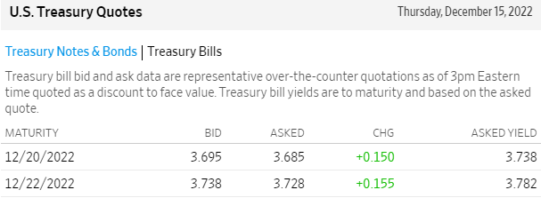
Days360(Date(2022,12,15),date(2022,12,20))= 5 days
\[ P = \left( 1 - d \times \frac{5}{360} \right) \times 100 = \left( 1- 3.685\% \times \frac{5}{360} \right) \times 100 = 99.9488 \]
\[ y = \left( \frac{100-99.9488}{99.9488} \times \frac{\color{red}365}{5} \right) = 3.738\% \text{, which is ASKED YIELD} \]
Pricing Repo
X sells $9,876,000 worth of T-bills and agrees to repurchase them in 14 days at $9,895,000 in the U.S. What is the repo rate?
\[ y = \left( \frac{9,895,000}{9,876,000} -1 \right) \times \frac{360}{14} = 4.9470\% \]
If the overnight repo rate is 4.5% what is the payment tomorrow for a repo of $10,000,000
\[ 10,000,000 \times \left( 1+0.045 \times \frac{1}{360} \right) = 10,001,250 \]